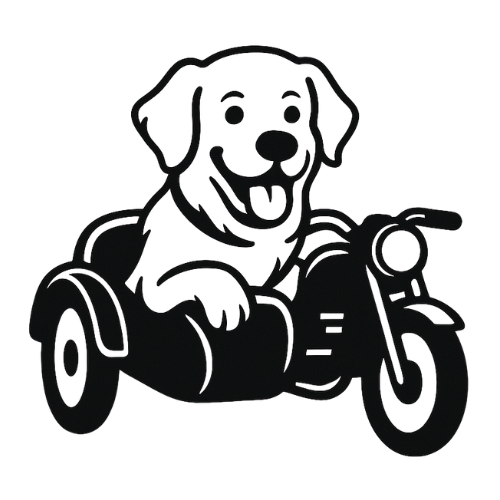

Sidecar AI is not meant to replace you. It's built to ride alongside you — capturing context, retrieving insight, and reducing administrative friction so you can focus on what truly drives growth: relationships.

SidecarAIThe assistant riding beside you while you drive is what matters.
SidecarAI strengthens follow-through, preserves context, and transforms conversations into measurable growth.
A sidecar doesn't drive the motorcycle.
It rides beside it.
Steady. Supportive. Integrated.
That's how we see AI.
Sidecar AI is not meant to replace you. It's built to ride alongside you — capturing context, retrieving insight, and reducing administrative friction so you can focus on what truly drives growth: relationships.
Most opportunities aren't lost at first contact. They're lost between contact and follow-through.
A conversation happens. Contact information is collected — a business card, a LinkedIn connection, a conference badge, a warm introduction.
And then:
Not because professionals don't care. Because the systems meant to support them weren't built to work together.
To approximate a true relationship intelligence system, professionals are forced to combine:
Multiple dashboards. Multiple logins. Multiple subscriptions. Still no unified intelligence layer.
SidecarAI is the intelligence layer that connects conversation to systems. We sit between the handshake and the CRM.
SidecarAI is the platform. RoloScan is our flagship entry point.
RoloScan is the capture layer of SidecarAI. It ensures that the first moment of connection — whether through a badge, a card, a QR code, or a LinkedIn exchange — becomes structured, enriched, and actionable.
RoloScan feeds SidecarAI's intelligence engine. Because the first handshake should be the beginning of a well-managed relationship.
Rolo is the intelligence engine behind SidecarAI. Inspired by a golden retriever — loyal, attentive, and remarkably good at bringing things back when called — Rolo retrieves the items listed alongside.
"He doesn't just store information. He retrieves what matters. Quietly. Reliably. Precisely."
Relationships are the real infrastructure of business.
Follow-through is a competitive advantage.
AI should work beside you — not in front of you.
SidecarAI exists to strengthen what drives growth, without increasing complexity.
SidecarAI is proudly female-founded. The company was born from lived frustration — not theory. After years of managing high-volume relationships across complex environments, the founder found herself buried under administrative overhead.
She went looking for a solution. What she found instead was a patchwork. To build the system she needed, she would have required:
Five to eight separate tools. Over $500 per month in subscriptions. Still fragmented.
"She used to joke that she wished she were important enough to have an executive assistant. What she really wanted wasn't a person. She wanted a system that worked like one."
A platform that:
She built it when she was unable to locate it. Built by a leader with experience spanning healthcare, enterprise systems, and high-growth environments, Sidecar AI reflects a deep understanding of how relationships drive meaningful outcomes.